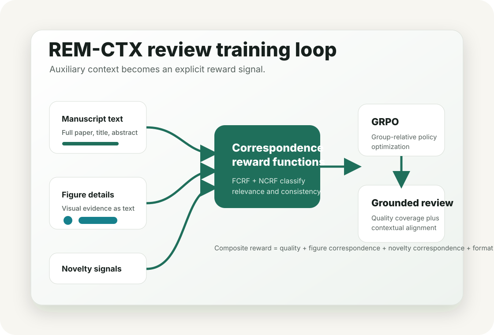

Auxiliary contexts
The model receives manuscript text plus figure descriptions and novelty assessments produced from external scholarly signals.
arXiv:2604.00248
Automated peer review via reinforcement learning with auxiliary context.
REM-CTX trains an 8B-parameter review model with GRPO and rewards that encourage generated reviews to use manuscript figures and external novelty assessments accurately.

Core idea
The model receives manuscript text plus figure descriptions and novelty assessments produced from external scholarly signals.
FCRF and NCRF score whether review sentences that discuss the auxiliary context are relevant and consistent with it.
Training combines quality coverage, figure correspondence, novelty correspondence, and a structured reasoning format reward.
Static Pages demo
Findings from the paper
Across six baselines, REM-CTX reports the strongest total aspect coverage on manuscripts from computer, biological, and physical sciences.
Figure and novelty correspondence rewards selectively improve their targeted grounding behavior, and the full model outperforms partial variants.
Training dynamics show criticism can trade off against other metrics, motivating future grouped or adaptive reward design.